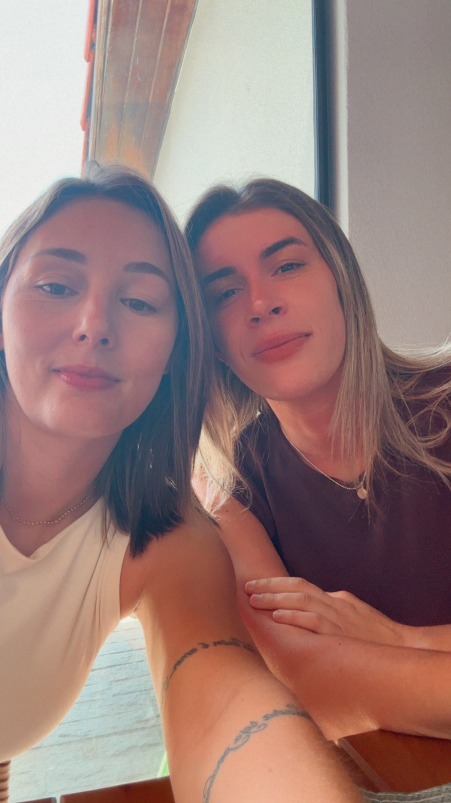

Existe uma teoria que diz que algumas pessoas estão ligadas por um fio invisível.
Um fio que não pode ser cortado pelo tempo, pela distância nem pelas circunstâncias.
Talvez tenha sido por isso que eu te encontrei justamente quando não estava procurando ninguém.
Você estava vivendo a sua vida e eu a minha... Mas, de alguma maneira, o destino encontrou um jeito de fazer os nossos caminhos se cruzarem.
Fico pensando em tudo o que precisou acontecer para eu te encontrar naquele Resort... Bastava uma escolha diferente, um outro lugar, uma outra data, um minuto de atraso... e talvez nós nunca tivéssemos nos encontrado.
Mas nos encontramos.
Como se, muito antes de nossos olhares se cruzarem, algo dentro de mim já soubesse que era você quem eu precisava encontrar.
E então, sem aviso nenhum, você apareceu. E tudo o que parecia acaso começou a fazer sentido.
A verdade é que você não surgiu na minha vida do nada. Você sempre esteve a caminho dela, e eu a caminho da sua.
Por isso, quando penso em nós, não penso só no dia em que nos conhecemos, mas em todos os dias anteriores que nos trouxeram até aquele momento.
Depois de encontrar você, eu não quero mais saber para onde a vida poderia ter me levado... porque eu gosto de onde ela me trouxe.
Gosto de saber que, no meio de tanta gente, a gente se escolheu. E eu vou continuar escolhendo você todos os dias.
Por isso, eu te peço...